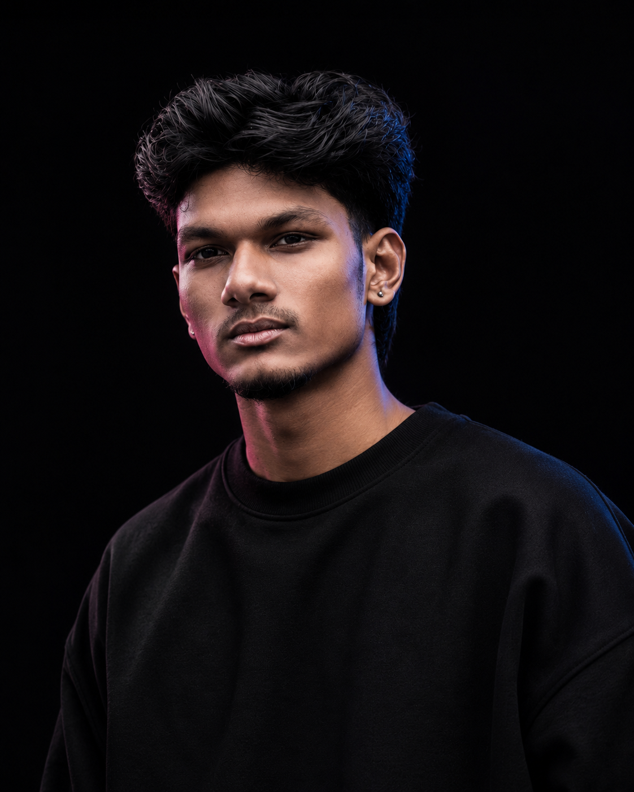

I'm a
UI/UX Designer
I design intuitive digital experiences that blend user needs, visual storytelling, and emerging technology.

A fresher designer with a curious, experimental practice.
I'm a passionate UI/UX Designer focused on creating intuitive, visually engaging, and meaningful digital experiences.
I enjoy exploring emerging technologies — Artificial Intelligence, Augmented Reality, Virtual Reality and Spatial Computing — and building interfaces that live beyond the flat screen.
My approach combines user-centred thinking, visual storytelling and interactive craft. Currently open to UI/UX Designer and Product Designer opportunities.
Recent projects,
crafted with intent.
Design
Tools
AI Tools
Designing beyond screens.
I enjoy exploring how emerging technologies can transform digital experiences. My projects experiment with Artificial Intelligence, Augmented Reality, Virtual Reality, and Spatial Computing.
Want to know more about my experience?
Download My Resume ↓Let's create something meaningful.
I'm currently open to UI/UX Designer and Product Designer opportunities. Based in Chennai, India — available worldwide.